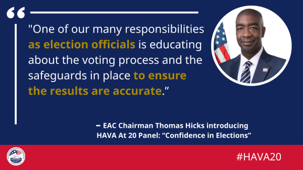
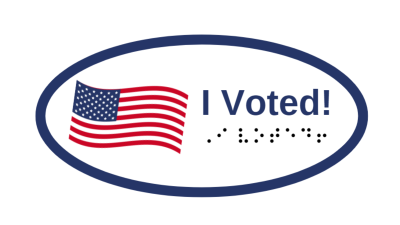

In this month’s EAC newsletter we’re excited to feature:
-
Help America Vote Act 20th Anniversary Recap
-
2022 EAVS Survey Launch
-
The Poll Worker Preparedness Checklist, a new EAC resource
-
Additional resources for election officials on election and post-election processes
-
EAC Chairman Thomas Hicks’ guest blog post for the Social Security Administration
The EAC Recognized the 20th Anniversary of HAVA on October 29, 2022

Signed into law by President George W. Bush on October 29, 2002, the Help America Vote Act (HAVA) addresses a variety of improvements to voting systems and voter access that were identified following the 2000 election. Read more about the Help America Vote Act of 2002 here.
“The 2000 election was a clear inflection point for our electoral system – not only revealing the challenges of our election infrastructure at the time, but also setting the stage for a continuous stream of improvements that have led to expanded voting access and technology nationwide. As we celebrate the 20th anniversary of the Help America Vote Act (HAVA), we acknowledge the immense advancements made at the local, state, and federal levels since the passage of this landmark legislation.”
— Joint statement from EAC Commissioners Thomas Hicks (Chairman), Christy McCormick (Vice Chair), Ben Hovland, and Donald Palmer
Read Our New Celebrating HAVA At 20 Blog Series!

To celebrate the 20th anniversary of the Help America Vote Act (HAVA), the EAC partnered with Pepperdine University’s School of Public Policy to host a special event, “HAVA At 20: Building Trust in Elections.”
This September, election officials and subject matter experts from across the country gathered at Pepperdine’s campus in Southern California to discuss important issues ahead of the 2022 midterm election and reflect on the impact of HAVA over the past 20 years.
You can read a recap of each of the four panels led by the EAC Commissioners during this special event in the new ‘Celebrating HAVA At 20’ blog series:
If you missed any part of this discussion, you can watch the event keynote address and all four panels on the EAC’s YouTube channel.
The 2022 EAVS Survey Launch
Following the election, the EAC will be conducting the 2022 Election Administration and Voting Survey (EAVS).
Your state point of contact should keep an eye on their inbox on November 14 for the official launch of this year’s survey. The EAVS provides the most comprehensive snapshot of each federal election and is only possible with the input of election officials. We thank you in advance for participating in the 2022 EAVS process. If you have any questions about the EAVS survey, please contact [email protected].
SAVE THE DATE!
Attend the EAC’s In-Person Public Hearing on Nov. 15, 2022
On November 15, 2022, the EAC’s first public hearing will be taking place in our new hearing room.
This event will be held in-person at 633 3rd Street NW, Washington, DC 20001, and will also be live streamed on the EAC's YouTube Channel. Registration for in-person attendance is preferred but not required.
Register for this event and learn more on the webpage, which will be updated with more information as it becomes available.
NEW EAC RESOURCE ALERT!
Poll Worker Preparedness Checklist
As Election Day approaches, the EAC is excited to share a new resource specifically created for poll workers.
The Poll Worker Preparedness Checklist is designed to assist poll workers as they prepare for Election Day, helping them feel ready and more confident as they prepare to serve their community – especially those serving for the first time.
ADDITIONAL EAC RESOURCES TO HELP ELECTION OFFICIALS PREPARE FOR ELECTION DAY AND BEYOND

Election officials have been busy preparing for Election Day, but what comes next?
With the help of the following resources election officials can now easily communicate about post-election activities such as conducting recounts, the results, canvass, and certification process, and managing post-election audits.
Non-Confrontational Techniques for Election Workers Training Video
The Cybersecurity and Infrastructure Security Agency (CISA) recently released a video on Non-Confrontational Techniques for Election Workers Training. To support election workers in a heightened threat environment, this training emphasizes non-confrontational techniques to help them to recognize potentially escalating situations, determine if emergency response is needed, safely de-escalate, and report appropriately. Election administrators can also use this video for election workers to complement their existing training with techniques to de-escalate potentially violent situations.
Election and Post-Election Processes Toolkit
The EAC created this Election and Post-Election Processes Toolkit to assist election officials with voter education efforts and help address misconceptions about the pre- and post-election processes. Election officials in any size jurisdiction can adapt this toolkit to fit their observer and voter education needs, both in-person and online. The toolkit includes customizable educational materials about processes for voters as well as templates for sharing trusted information, combatting mis- and disinformation, and providing information to the media and political parties about the post-voting process.
Videos to Educate Voters on the Results, Canvass, and Certification Process
Many voters want to understand what happens after they vote. Election officials can use these EAC videos to support voter education efforts on social media platforms, websites, and more:
-
WATCH: What Happens After I Vote? - Results, Canvass, and Certification Video
-
WATCH: What are Unofficial Results - Results, Canvass, and Certification Video
Guide to the Canvass
The canvass is a culmination of all the data generated during an election cycle. It aggregates and confirms every valid ballot cast and counted, including mail, uniformed and overseas citizen, early voting, Election Day, and provisional ballots. More importantly, it allows election officials to confirm the accuracy of election data and identify potential areas for improvement.
Election officials can find information on and best practices for the canvass process in the EAC’s Guide to the Canvass. This includes best practices for conducting post-election canvasses, including checklists for key parts of the canvass.
Checklist for Securing Election Night Results Reporting
Election night reporting systems consist of aggregating and displaying unofficial election results to the public, usually through an official website or social media platforms. To assure voters that the data is accurate and protected, election officials can use this EAC Checklist for Securing Election Night Results Reporting as a baseline to assess their current election night reporting cybersecurity protocols.
Guide to Election Certification
While the method, scope, and timing of post-election activities vary by state, there are several steps election officials must complete before they certify election results. The EAC’s Guide to Election Certification breaks this down on the local, state, and federal level with helpful definitions and best practices.
Conducting a Recount - Quick Start Guide
Whether triggered automatically, requested by a candidate, or court ordered, election officials can take several steps to prepare for and conduct efficient and transparent recounts. The EAC’s Conducting a Recount Quick Start Guide outlines factors election officials should consider from planning through finalizing recount results.
Post-Election Audits – Quick Start Guide
Post-election audits are an important tool to verify election results. The Post-Election Audits Quick Start Guide outlines several tips for election officials before, during, and after conducting an audit.
Roundtable Discussion: Election Night Reporting for the 2020 Election
Leading up to the 2020 general election, the EAC hosted a discussion on preparing for election night reporting and press coverage on election results. Speakers offered remarks on issues surrounding misinformation and disinformation, unofficial results, managing expectations, ballots received after the election, and audits. Joining the EAC Commissioners were New Mexico Secretary of State Maggie Toulouse Oliver, Iowa Secretary of State Paul Pate; Brian Carovillano, Vice President and Managing Editor of the Associated Press; and Nate Persily, Professor of Law, Stanford Law School.
Watch a recording of the event on the EAC’s YouTube Channel.
You can find these and additional resources on the EAC’s Clearinghouse for Election Officials webpage.
EAC Chairman Thomas Hicks Writes about Voting Accessibility for Social Security Administration’s Blog
%20(1)_0.png)
During the midterm election, 38.3 million voters with disabilities will have the opportunity to vote but may face unique obstacles when casting their ballots. In a recent guest post for the Social Security Administration’s Social Security Matters blog, EAC Chairman Thomas Hicks shares tips and resources to help make voting more accessible to those with disabilities. Read: “Helping voters with disabilities participate in our democratic process.”